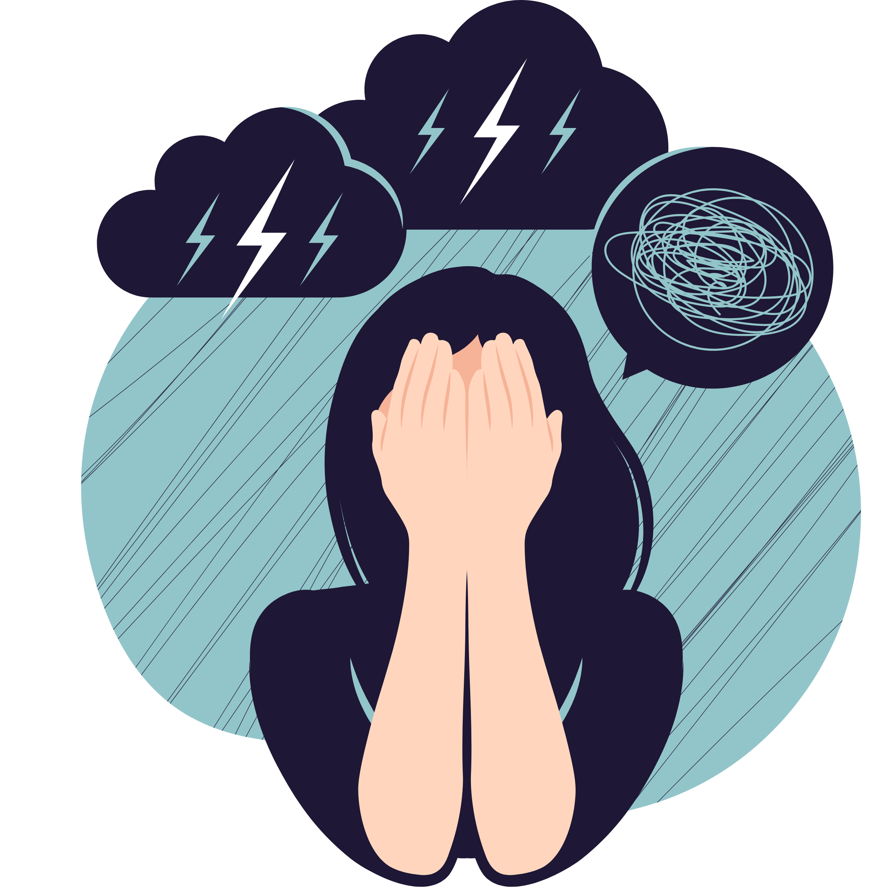

Warning Signs and Symptoms
Mental health disorders can vary a lot. Symptoms depend on what type of mental health disorder and from
person-to-person.
The following are some common warning signs and symptoms which can be caused by various mental health
illnesses.
Emotions:

- Confusion and difficulty concentrating
- Excessive worrying, fears, and anxieties
- Feeling excessively sad or low
- Extreme mood changes, extreme highs or lows
- Prolonged or strong feelings of irritability or anger
- Suicidal thoughts
Changes in habits:
- Social Withdrawal
- Dramatic changes in sleeping and/or eating habits
- Use of drugs and/or alcohol
Other Warning Signs and Symptoms:
- Delusions and hallucinations
- Intrusive thoughts
- Multiple complaints of unexplained physical ailments
- Inability to cope and manage responsibilities and daily problems
- Intense fear of weight gain or concern with appearance
Even if your mental health concerns are not that severe, it is still good to be mindful of
these warning signs because
they can help you be more mindful and start doing or changing things in your life for the betterment of your
mental health.
Getting a Proper Diagnosis
Knowing the warning signs and symptoms will help you recognize and be aware of your personal
mental health and those around you.
Getting a proper diagnosis is the most important step in a treatment plan because it starts the whole
journey to a better state of mental health.
If you exhibit some of the warning signs and symptoms, do not be afraid to ask for help and guidance.
Same goes for someone you know, help them because you might not know how much it will mean for them.
Some people are just scared to ask for help. There are many resources to starting your journey of seeking
professional help and guidance.
Dangers of Self-diagnosing
It is good to be aware your mental health, but self-diagnosing is not advisable since it is
potentially dangerous (Thatcher, 2021).
Self-diagnosing can lead to under playing some symptoms or over exaggerating others.
It can lead to more anxiety about your condition since you can over-diagnose.
You might think you have many conditions but in actuality, all your symptoms fit under one condition.
You could also diagnose yourself with something more severe than what you are actually experiencing
which can downplay the experience of people that actually have that condition.
You might also try to cure yourself with medication you don’t actually need.
Overall, recognizing and acknowledging your symptoms is important but diagnosing is such a complex task,
so it is better to seek the help of actual professionals before falling into a spiral of searching all your
symptoms.